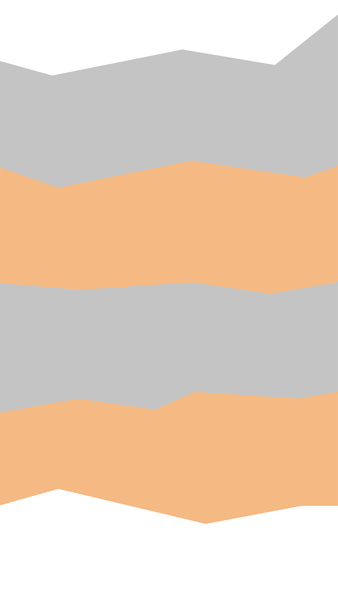

Про зимову школу програмування
Волинський коледж Національного університету харчових технологій запрошує учнів 9-11 класів, учнів професійно-технічних училищ та студентів технікумів та коледжів м. Луцьк взяти участь в II Зимовій школі програмування.
УВАГА! Реєстрація на курси почнеться 21 грудня і триватиме до 31 грудня 2018 р.
Мета школи - надати школярам, учням та студентам можливіть проявити свою майстерність у мистецтві розробки алгоритмів та складанні програм мовами високого рівня, підвищити рівнь знань з предметів, які передбачають програмування та алгоритмізацію.
Початок занять - 2 січня 2019 року. Тривалість занять - 3 тижні: 9 занять по 2 години в день. Місце проведення Зимової школи - мультимедійні навчальні класи та комп'ютерні лабораторії Волинського коледжу НУХТ. Заняття проводяться в трьох секціях.
Кодування на андроїд
Основне завдання секції ознайомити учасників школи з елементами інтерфейсу середовища MIT App Inven....
Олімпійський резерв
Основне завдання секції підготовка до участі у міжнародній олімпіаді з програмування «The ACM-ICPC International ....
Основи Web-дизайну
Основне завдання секції надати базові знання із основ web-розробки, зокрема курс покриватиме такі теми як...
Наша команда завжди допоможе вам:
Шепелюк Галина
викладач,
організатор Зимової школи програмування
Детальніше
Жовнерук Владислав
викладач,
організатор Зимової школи програмування
Детальніше
Іщик Сергій
викладач,
організатор Зимової школи програмування
Детальніше
Патрон з 309
викладач,
організатор Зимової школи програмування
Детальніше
[ Досягнення нашої школи програмування ]

2018 Західний регіон Всеукраїнської олімпіади
...
2017 Фінал Всеукраїнської олімпіади
...
Весна 2019. Новий етап Міжнародної (Всеукраїнської) олімпіади
...

2018 Обласний етап Всеукраїнської олімпіади
...
Реєстрація на курси розпочнеться 21 грудня і триватиме до 31 грудня 2018 р.
Кодуємо андроїд
Олімпійський резерв
Основи Web-сайтів
Контактна інформація
Основні посилання
Соціальні мережі
- vocnuft@gmail.com
- (0332) 721 217 - приймальна директора ВоК НУХТ
- (0660) 79 9579 - Шепелюк Галина Степанівна - організатор Зимової школи
- вул. Кафедральна, 6, м. Луцьк, Україна, 43016